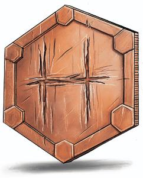

永远不要炫耀幸运。避免变得自大与骄傲。那些大声夸耀的人可能会引起监守嫉妒的目光。
——宁静守夜人教派的阿斯塔·奥伦
你渴望的是什么？漂亮的衣服？一座豪华的宅邸？一箱箱的钱币和珠宝？真了不起。如果这些东西是不好的，它们就不会存在；如果它们是好的，想要它们又有什么错呢？一个战士为什么不该想要最强的盔甲或者最锋利的剑？一个法师为什么不该想要最大的图书馆或者最好的奥术工坊？监守教导道，你应该拥有所有你渴望的东西——你只需要愿意为它们付出代价，无论是用金子、汗水还是鲜血。所以让我们来谈谈你渴望的是什么，以及你愿意为此付出什么。
——铜·汤姆，监守之爪
在黑暗六神中，监守是封臣们最普遍承认的神。每一场葬礼都承认他的存在，人们通常认为他是死神——但这是错的。在天命诸神的神话中，天命诸神与死亡作斗争，而不是与监守作斗争。他不是死神，他首先是贪婪之神；然而，他最渴望的东西之一是灵魂，他确实利用死亡和各种导致死亡的方式来获得他渴望的灵魂。消耗性疾病、食物中毒、纯粹的厄运——监守的手段可以用无数种方式引发死亡，但所有这些都只是象征监守贪婪的表现……如果你用其他珍宝去安抚他，所有这些都是有可能避免的。
《探秘艾伯伦》将监守描述为——“那些利己主义者的守护神。他引导那些不顾他人的代价，用诡计获取黄金的人。一个供奉欧拉卓的游荡者将自己视为故事里的英雄；一个呼唤监守的人不会因为自己成为反派而感到内疚。除了指引那些把利益放在第一位的人之外，监守还因他乐意举行交易而闻名——尽管他的交易总是对他有利。被称为“监守之爪”的祭司会代表监守举行这些交易，尽管这些条款通常是抽象的，纯粹是由信仰驱动的。一名艺人可以和“监守之爪”讨价还价，用他十年的寿命来换取将来的名誉；即使这名艺人后来出名了，也无法知道这是否就是那次交易的结果，也无法预料这名艺人何时会突然死亡。”
所以在派里尼信条the
Pyrinean Creed中，监守扮演着两个截然不同的角色。他是在每次葬礼上都必须安抚的灵魂窃取者。但他也是随时准备进行交易的秘藏之主，贪婪的守护神。
正如阿斯塔·奥伦所说，“那些大声夸耀的人可能会引起监守嫉妒的目光”，所以派里尼的教义鼓励谦虚和节俭。炫耀财富或天赋会引起监守的注意，一旦他盯上你，厄运就必然会随之而来。如果你运气好，他可能只会偷走你所炫耀的财富——或者更糟的是，他可能会渴望你本身，即使是最强大的英雄也会被疾病或厄运击倒。一旦监守将你堕入黑暗，他就会在你的灵魂到达杜鲁尔之前将它夺走，并将你添加到他无尽的秘藏当中，在那里他可以玩弄并折磨你，直到时间的尽头。
乍一看，这听起来可能并不完全是一件坏事。杜鲁尔不就是一个让灵魂消逝，记忆消失的地方吗？被监守带走的灵魂不是就不会被遗忘了吗？答案既是肯定的，也是否定的。灵魂在杜鲁尔里会消逝，这是一个可以观察到的事实——但问题是为什么。封臣们认为，随着记忆的消逝，这反映了灵魂向更高层次的现实的过渡；灵魂并没有迷失，而是加入了天命诸神的行列。如果监守偷走了你，他就偷走了你进入天国的机会……或者即使你不相信灵魂会加入天命诸神的行列，你仍然要在被遗忘或被监守永远折磨之间做出选择。因此大多数人都合理地倾向于躲避他的掌控。
在所有派里尼的封臣都承认监守所构成的威胁的同时，很少有人会在这方面崇拜他；大多数人只是想避开他。但是在科瓦雷还是可以找到一些监守的仆人，包括监守之爪和宁静守夜人的祭司。
宁静守夜人的祭司专门从事防腐、监督葬礼和维护墓地的工作。他们在五国的每一个主要城市都可以被找到，一些较小的城镇会有一个作为守夜人的虔诚信徒在照看墓地。然而，他们时刻保持低调，所以除非你正计划葬礼或者盗取坟墓，否则几乎没有什么理由与他们产生互动。
宁静守夜人的教义基于这样一种观点，即大多数灵魂都会通过杜鲁尔进入神国，但一旦某人进入了神国，他们就再也回不来了。因此，如果奥林知道未来会需要一个死去的英雄，他就会让监守在灵魂到达杜鲁尔之前把它夺走，并打算在适当的时候复活那个英雄。因此，宁静守夜人的成员会首先将自己视作奥林的仆人，但他们也理解监守，并帮助人们躲避他的掌控。在准备葬礼时，宁静守夜人的成员会帮助死者选择合适的陪葬品或祭品，以分散监守的注意力，确保灵魂到达杜鲁尔。对于一个没有什么成就的普通人来说，一枚硬币就足够了；但死者越是非凡，监守对他的兴趣就越大，需要更珍贵的祭品来分散他的注意力。
虽然宁静守夜人会在五国公开运作，但其他与监守有联系的人更喜欢躲在阴影里。这些人感觉到自己与监守有着更紧密的联系——他们听到了他的声音，接收到了幻象，或者只是知道他最想要的是什么。这些刺客被称为“监守之牙”，他们会追踪并杀死任何被监守标记的人。他们也可能被要求找到那些监守想要添加到他秘藏中的珍宝（尽管这取决于DM来决定监守是否希望一名监守之牙立即牺牲这样获得的珍宝，或者监守之牙是否可以在监守索取它之前使用它一段时间）。
在古代索隆娜国家派里尼（Pyrine），监守之牙用死亡换取黄金。暗杀行为在五国是不被许可的，但有一个监守之牙组织仍然遵循着这些古老的传统，为金钱提供他们的服务。这些监守之牙的数量很少，以至于索兰尼家族通常不会将其视为商业威胁。
如今，大多数监守之牙都不是刺客，他们与监守有着完全私人的关系。他们在幻象中看到了他想要的东西，并希望从监守那里得到奖励。对于一个咒剑邪术师来说，这是一个合理的背景，他的暗影武器是监守的礼物。然而，对于死亡领域牧师、破誓者圣武士或刺客游荡者来说，这也同样合理。
“监守之牙”也是一种防止复活的武器附魔的名称，在《艾伯伦战役设定集》（译注：这是一本3R的扩展）和《探秘艾伯伦》中有描述。一些监守之牙会在工作中使用这些武器，而另一些则拥有模仿这种能力的超自然天赋；不管怎样，当他们杀死一个被监守标记的人时，那个灵魂将永远无法到达杜鲁尔。
边栏：獠牙祝福 Blessing of the Fang
根据黑暗六神的神话，监守觊觎活人的灵魂，他的仆人有时会拥有偷走生命灵魂的能力。这些神话通常与监守之牙匕首有关，黑暗诉愿人游荡者（在本章末尾）在17级时会获得类似的能力。然而，为监守的理想服务的强大的邪魔——甚至是神秘的神本人——可能会给忠诚的追随者或命中注定的某人带来以下祝福。在《城主指南》的第7章（译注：在“其他奖励”一节）中讨论了这种超自然赠礼。 獠牙祝福Blessing of the Fang。当你触碰一个生命值降至0或在最后一分钟内被杀死的生物时，你可以选择杀死它（如果它还没有死的话）并移除它的灵魂。以这种方式被移除灵魂的生物只能通过祈愿术wish才能复活 |
监守真的会在去往多鲁洛的路上抢夺灵魂吗？与其他任何与神有关的事情一样，这里没有绝对的证据。但从多数的神话到存在捕获灵魂的“监守之牙”武器的事实来看，灵魂当然有可能以这种方式迷失。许多故事讲述了英雄们在恶魔荒原中找到了监守之巢，并与一条骷髅龙谈判，以找回被监守之牙夺去的灵魂。也许这些故事都是真的。或者“监守之巢”是通往由马兹拉利克斯Mazyralyx，第一个也是最强大的龙巫妖，所统治的半位面的入口……而就是这个强大的生物创造了“监守之牙”。最终这都要由DM来决定——除了迷信和巧合之外，监守之爪的交易还有什么意义吗？监守能带走灵魂吗？如果可以，如何让那些灵魂复活？
在艾伯伦，死亡提供了另一个与监守进行交易的机会。如果玩家角色在职业生涯早期死亡，监守（或者一个强大的龙巫妖或者其他冒充他的生物）可以使其复活——但代价是什么?或者，如果玩家角色有能力复活死者，监守可以在这其中增加一道意想不到的障碍。如果监守夺走了一个灵魂，死者复活raise dead法术就无法对其起效，除非监守选择释放这个灵魂……而为了说服他，牧师必须进行一场艰难的交易。
边栏：死灵法术与黑暗六神 Necromancy and the Dark Six
死灵法术在五国有着邪恶的名声。在封臣之间，死灵系奥术通常与阴影有关，而死灵系神术（比如死亡领域的牧师）通常与监守有关。在天命诸神和黑暗六神之外，死灵系神术通常与沃尔之血联系在一起，并且在终末战争中，只有坎纳斯使用了死灵法术。 普通人出于许多原因而回避死灵法术——毕竟，不死生物在这个世界上是一股真实而危险的力量。食尸鬼、幽影和缚灵都是实实在在的威胁，因此不死生物会引发大多数人本能的恐惧。更重要的是，许多人相信死者的灵魂最终会在杜鲁尔之外达到某种形式的平静——无论是与天命诸神还是银焰——因此，任何与死者互动的魔法都可能扰乱这种安宁。封臣们也倾向于埋葬他们的尸体，并认为操纵尸体是对死者的不敬且令人反感。 使用死灵法术在五国并不违法，只是令人讨厌而已。和所有的魔法一样，是否犯罪取决于你如何使用这些法术。沃尔之血的牧师不会因为有骷髅同伴而被逮捕，但亵渎尸体是违法的，所以守卫可以要求检查你声称拥有这具尸体的所有权的证据！而对其他法术的常见反应则取决于法术的表现形式。理性地说，一道衰弱射线ray
of enfeeblement并不比一道灼热射线scorching ray更邪恶或更不邪恶，但如果它表现为一道会发出刺耳的声音的阴影箭矢，似乎是通过侵蚀受害者的灵魂来削弱他们，人们会说这是阴影或监守的杰作。灼热射线scorching
ray实际上可能比衰弱射线ray of enfeeblement更致命，但至少它是纯正的火焰。 坎纳斯的阿图尔是五国中主要的死灵法术研究中心，但阿卡尼克斯也有自己的死灵法术学院——尽管它是规模最小，资金最少的学院。这所学院主要侧重于“被动”的死灵法术，比如死者交谈speak
with dead法术，而不是进攻性的魔法。 |
既然封臣们把珍宝和他们尸体埋葬在一起以分散监守的注意力，为什么盗墓行为没有普遍发生？对封臣们来说，迷信是主要的威慑因素。人们将物品与所爱之人的尸体一起埋葬，这样监守就可以拿走珍宝而不是那个灵魂——如果你盗取了那个坟墓，你就等于直接从监守那里偷走了东西。尽管监守并没有亲自从坟墓中夺回被埋藏的物品，但封臣们相信，他已声称这些物品是他分散在世界各地的秘藏的一部分。如果你从他的秘藏中偷东西，他可能会选择连本带利地回收他的秘藏。
因此，关于盗墓者被监守诅咒的故事比比皆是。有时那名小偷会感染一种消耗性疾病或遭遇足以致命的厄运（也许当角色在攻击掷骰中掷出1时，他们会以自己为攻击目标；当他们在豁免掷骰中掷出1时，他们受到通常两倍的伤害或负面影响；当他们进行技能检定中掷出1时，他们的失败将带来危险的后果）。其他时候，他们会成为随机性暴行的目标，通常是抢劫或其他由贪婪驱使的行为。如果一件魔法物品被盗，监守的触碰可能会扭转它的附魔enchantments——因此如果你找到了先王布雷格Breggor
Firstking的坟墓，并从监守的秘藏中偷走了他的传奇之剑，它可能会变成一把受诅咒的复仇之剑sword of vengeance。
这些都是监守的诅咒可以实现的方式，但这并不意味着它一定会实现。封臣们知道并不是每个从坟墓里偷东西的人都会死得很惨，但你为什么要冒这个险呢？除了这种风险，普通的坟墓很少会有珍贵的宝藏；它们可能会有一些铜币，但这些陪葬品大多是根据它们对死者的价值而选择的。一幅儿童的小型肖像画对死者来说可能非常重要，但一个小偷能把这个画框典当到几枚伽利法币就很幸运了——这值得冒险吗？
对于一个富有的商人或王子来说，有时这种风险是值得的。这些人物的坟墓里有更重要的宝藏，但封臣的墓地通常由宁静守夜人的成员看守。含有大量财富的坟墓还会实施其他保护措施；这可能是一个简单的用于召唤宁静守夜人的警报术alarm，或者一道在棺材上的秘法锁arcane lock，也可能是更引人注目或危险的东西。一道魔嘴术magic
mouth可以对任何进入地下墓穴的人说话，如果他们没有通过识别，法术就会发出警报。一道守卫刻文glyph of warding可以施展暗影衍体召唤术summon
shadowspawn。对于一个真正著名的英雄或贵族来说，一座地下墓穴可以容纳一个名副其实的陷阱和守卫迷宫——一场冒险正在酝酿!“你需要进入第一个米卓女王的墓穴，找回与她一起埋葬的那把剑。但你能穿过这么多的陷阱吗？这把剑的力量还完好无损吗？”
边栏：监守，沃尔之血，与卡塔什克·守门者 The Keeper, the Blood of Vol, and
Katashka the Gatekeeper
从表面上看，监守、沃尔之血和霸主卡塔什卡都与死亡和死灵法术有关。那些不知情的人通常会认为他们的邪教会是相互之间的盟友，但实际上，这三者是截然不同的。 沃尔之血的核心思想是人们应该与死亡作斗争，而不是拥抱死亡。追寻者（Seekers）使用死灵法术在一定程度上是为了避免忘却，但也因为复活死者以保护生者是一种报应——“即使他们失去了生命，他们也会再次站起来保护他们的人民。”追寻者（Seekers）鄙视卡塔什卡和监守的追随者。他们认为所有的天命诸神都是残忍的，是用疾病和痛苦折磨着凡人的存在；监守只是毫不掩饰地这么做了而已。 卡塔什克·守门者（教会）在凡人对死亡和不死生物的恐惧中发展。坎纳斯的死灵师necromancer陶醉于他们对死者的统治，和他们的法术所能造成的恐怖当中。在这三种邪教会中，卡塔什卡的追随者门最有可能进行不必要的残暴的行为，并创造出可怕的新型不死生物；恐吓他人是他们快乐的源泉。 监守的邪教徒们不喜欢卡塔什卡或沃尔之血。监守的祭司们通常使用死灵法术来削弱或直接杀死敌人，或者与死者交谈。他们可以创造不死生物——这被看作是监守暂时从他的秘藏中释放出一个灵魂——但很少有人真正喜欢与不死生物为伍。毕竟，监守的标志性行动是偷取灵魂，而不是让尸体复活。而那些尊他为秘藏之主the Lord
of the Hoard的监守邪教徒们可能根本不会使用死灵法术，因为他们感兴趣的是财富，而不是死亡。 |
寇·柯兰是商业和诚信贸易的守护神——相比之下，他的兄弟是那些利己主义者的守护神。监守反映了商业阴暗面、煽动人心的贪婪、炫耀性的消费和永不满足的贪欲。尽管这些可能引起谋杀或盗窃，但贪婪和囤积是守护者的特征——死亡只是他用来将灵魂添加进他的秘藏的工具。
个别的天命诸神和黑暗六神都与贪婪和狡诈有关。嘲弄会引导那些以欺骗制造流血的人，但如果你是为了追求金钱而欺骗，你会转而求助于监守。同样地，那些自认为是无私或英勇的罪犯和游荡者可能会向欧拉卓寻求好运，但如果你愿意承认自己的贪婪，你会向监守祈祷。毕竟，监守会帮助说谎者和作弊者。
这种崇拜是通常是个人行为。波罗马家族的许多成员都向监守祈祷，但家族中并没有为他建立神殿。一个特别善于将人们和他们的财富分开的骗子可能会被认为是受到了监守的祝福，正如一个熟练的铁匠可能被认为是受到了昂纳塔的青睐一样；这样的恶棍可能没有牧师的打扮，但其他人可能仍然会请求得到他们的祝福（并愿意为此付出）。另一方面，一个监守的牧师可以经营他们自己的盗贼公会，通常将他们的会众视为满足自己贪婪的工具。诡计领域对于追随监守的这一面的牧师是很合适的，但这条道路同样适用于任何游荡者，罪犯或骗子。
监守总是在寻找新的珍宝来添加进他的秘藏，这些珍宝可能包括灵魂、记忆以及物质的财富。与监守交易可以让你获得财富，魔法物品，邪术师的力量，或者更多。虽然旅者的礼物往往会带来意想不到的结果，但监守的商品通常都是它们看起来的样子……但除非价格对他有利，否则监守不会进行交易。无论你从监守那里得到什么，你都必须放弃更有价值的东西。
如何与监守做交易？黑暗六神并没有行走于世间（译注：除了旅者），所以你必须找一个监守之爪——一个能代表监守进行交易的中间人。任何相信自己与监守有密切联系的人都可以担任这种祭司般的职位——无论是监守之牙，宁静守夜人的祭司，分贵（Pennyroyal），甚至是一个随机的相信自己的才能是来自秘藏之主的礼物的骗子。尽管有这么多选择，但真正的监守之爪是非常少见的，而那些有记录的监守之爪就更罕见了。“监守之爪”是由他们一连串的成功来定义的；为了招揽生意，人们必须相信他们可以为监守代言。但监守只在他自己的时间，以自己的方式行事。
因此，与监守之爪进行交易完全是一个信仰问题。请愿者带着请求而来，而监守之爪定下严谨的条款。付款通常是抽象的：最常见的报酬是保证监守在申请人死后将拿走他的灵魂，通常还会附加上最大寿命限制(“如果你活到40岁，监守将结束你的生命并取走他应得的奖赏”)。但代价也可以是请愿者所拥有的独特的东西，无论是物质的还是形而上学的。唯一不变的是，除非价格对他有利，否则监守不会进行交易；代价总是高昂的。
如果一场监守之爪交易有物质成本，他们会代表监守拿走货物，但他们自己并不履行交易，也不能保证监守何时会实现他的承诺。因此，一个有抱负的商人可以进行一场交易，用她母亲留下的唯一的画像和缩短40年的寿命，来换取财富和成功；监守之爪拿走画像，商人则继续他的行程。在一年内，商人会有一连串的好运气，或者找到一个富有的投资者，或者偶然发现埋藏的宝藏，让她能够创建自己的事业。这是交易的结果，还是纯粹的巧合？她会在四十岁时死去吗，还是说那只是迷信？在怀疑论者看来，监守之爪交易是非常可疑的；但很少有人会对此怀疑到去试图欺骗一名监守之爪，因为犯错的代价太高了。
从形而上学的角度来看，许多人认为监守能够通过向人们注入他所收藏的少数灵魂，来将更多抽象性的天赋赋予给他们。例如，监守可以通过向寻求者注入一个著名的吟游诗人的灵魂，授予他音乐方面的天赋。在某种程度上，这类似于泰伦那多的守护先祖（patron ancestor）的引导，但派里尼的牧师认为，这对于那个被支配的灵魂来说是一种可怕的经历，据他们所说，那个被支配的灵魂将被迫地束缚在受益者身上，眼睁睁地看着交易者使用着他们的知识，却无法以任何方式行动或对这个世界造成影响。同样，不鼓励人们做这些交易是有原因的！因为监守的很多交易是依靠他的秘藏中的灵魂来完成的，所以他（能赋予）的天赋是有限的。他可以提供物质上的财富、特殊的珍宝、技能、或者知识——但他不能提供凡人还未发现的知识，也不能提供凡人无法掌握的技能。这是监守和阴影的关键区别。作为你灵魂的交换，监守可以给予你一个死去的人的技能。然而，阴影可以提供凡人所不知道的秘密——很可能是以利用这些知识去伤害他人作为高昂的代价的。
边栏：不朽之爪 Immortal Talons
天命诸神和黑暗六神不以物质上的形式显现，但不朽者和其他强大的生物可以代表他们行事。在你的战役中可考虑以下能够提供危险交易的实体，无论是代表监守还是其他人： 戈尔登Golden是西拉尼亚的贪婪之主天使（the
Dominion of Greed）。她大部分时间都在无限集市中度过，但偶尔也会来艾伯伦谈一笔有趣的交易——无论是出于她自己的意愿，还是为了服务于她认为给予她神圣的指导的秘藏之主。 哈扎雷沙·萨拉赞Hazaresha Salazan是达安维的一个安祖魔，他喜欢谈复杂的合同。和戈尔登一样，他认为自己忠于监守，经常去充当监守之爪。 闪光·奥拉扎里克Shining Olazaryx是一个来自阿贡尼森的镀金龙巫妖（gilded
dracolich）。他相信在他最后一次死亡时，他将成为监守，并试图在此期间模仿他的行为。 雾港商人The Merchant of Misthaven是一个来自瑟兰尼斯的至高妖精，她的故事围绕着危险的交易展开；她没有以任何方式献身于监守，但她是类似交易的另一个可能的源头。 玛兹拉里克斯Mazyralyx是第一个龙巫妖，创造于恶魔时代。他是霸主卡塔什克·守门者的帕苦图（prakhutu）（译注：指“代言人”）。玛兹拉里克斯不参与一般的交易，但在过去的几千年里，他使用监守之牙等工具收集了许多灵魂；如果冒险者需要为一个特定的无法找到的灵魂做交易，他们可以在恶魔荒原的监守之巢中寻找玛兹拉里克斯。 |
在五国中与在卡扎克信条（the
Cazhaak Creed）或其他怪物文化中相比，人们对黑暗六神的看法截然不同。虽然监守的不同教派遍布世界各地，但对于监守来说就不完全是这样。在五国中，币之三面（the Three Faces of Coin）尊敬监守作为秘藏之主的一面。与此同时，卡扎克信仰（the Cazhaak faith）与派里尼教派的观点相同，认为监守既秘藏着死者的灵魂，也秘藏着物质上的财富。
币之三面是一种献身于昂纳塔，寇·柯兰，和寇·图兰特（监守）的秘密崇拜。就像所有的三面崇拜一样，这是一个秘密而排外的组织；他们会招募被认为受到了三面之一的祝福的成员。他们的成员通常是成功的商人或行业巨头，也有一些是金权会和龙纹家族的成员。然而，币之三面并没有什么宏大的计划。在最简单的层面上，这个教派是那些了解币之奥秘的人的互助会，它为建立人际关系和交易提供了宝贵的机会。
币之三面统治着商业和工业的“战场”，支配着我们为得到我们想要的东西而进行的斗争。昂纳塔引导那些创造人们渴望的商品的人，寇·柯兰激励那些在光明中交易的人，寇·图兰特引导那些在阴影中工作的人。这个教派的所有成员都遵循相同的原则：你应该总是能够得到你想要的东西，但好的工作总是值得一个公正的价钱。所有人都应该有一条通往获利的道路，只要他们愿意为之努力。一个诚信的铁匠应该总是能够从他们的辛勤劳动中获利，而那些希望购买铁匠商品的人应该有办法做到这一点……即使这需要不道德的合作。
被称为分贵（Pennyroyals）的被寇·图兰特祝福之人，所遵循的是一条扭曲的道路。典型的分贵是一名走私犯或者销赃犯——一个逃避法律以为人们提供他们想要的东西的人。然而，分贵中也包括骗子、扒手和小偷。对于大多数硬币（这是对教派成员的非正式称呼）来说，这似乎是完全合理的，因为你应该总是能够得到你想要的东西——哪怕你没有理由不花费公正的价钱。当然，小偷总是认为他们应该为自己的服务得到一个公正的报酬！毕竟，大多数硬币都应该得到公正的报酬，即使在这个过程中有一些不幸的旁观者受骗了。
作为币之三面的追随者，你可以决定遵循哪条道路。你可以选择只遵循寇·柯兰的道路，从事诚信的商业活动，但你也要认识到，当你的同伴无法在光明中得到他们想要的东西时，他们有权步入阴影。硬币们本身并不反对贸易法；他们只是认为，对于那些愿意为之努力的人来说，总有办法绕过这些法律。诚信的商人可能永远不会和一个分贵打交道，但他们知道他们可以。
币之三面的黑暗面反映在他们所拥抱的寇·图兰特上。硬币们明白，在适当的时间和地点，贪婪可以是好的——与其逃避贪婪，不如理解并利用贪婪。毕竟，每个人都想要得到东西，每个创造者都希望人们想要他们所创造的东西。硬币们说，只要你愿意付出合理的代价，这种欲望没有错，通过扭曲规则来得到你想要的东西也没有错。因此，币之三面是极少数公开愿意出售其神术施法者的法术的教派之一。法术是商品；如果你想要一个，你应该为此付钱。这并不意味着一个硬币牧师必须向同伴收取施放有益法术的费用；但你意识到你的魔法是有价值的，你可以为此收费，所以如果你选择把它作为礼物送给朋友，他们最好感激你!
被称为“监守之手”，献身于监守的祭司可以在卓姆、达贡，甚至在吉拉哥或拉扎尔邦联找到。尽管在信奉卡扎克信仰的地区更为常见，但监守之手在多种文化和传统中都可以找到。这些牧师通常会代替宁静守夜人（的位置），尽管他们缺乏奥林仁慈的一面。他们依旧会主持葬礼，照料墓地，但他们不会被束缚在一些更美好的事情上，而是会毫不顾忌地介绍自己是监守的仆从。和宁静守夜人一样，他们为灵魂的安全通行设定了价格；然而，这个价格中绝对包含了祭司个人的利益。在监守之手服务的社区中，人们普遍认为，人们可以通过简单的献词(“监守带走你的灵魂!”)或者更完整的仪式，向监守传送他选择的灵魂以获得他的恩惠……所以如果你不付钱给监守之手来确保你所爱的人前往杜鲁尔，他们反而会将灵魂出售给监守来为自己获利。
监守之手经常使用死灵法术，他们可能是导师、死亡牧师、死灵宗主邪术师，或破誓者圣武士。他们将死灵法术视为来自监守的、（他们）应得的天赋，并认为这是死灵师强迫死者去服务的权利——这与寻求让死者安息的宁静守夜人祭司的观点截然不同。
监守之手并不认为这是邪恶的——这就是宇宙运行的方式。生与死是商业交易，而监守之手则是希望从中获利的商人。他们甚至可能与由一群暴力的冒险者组成的佣兵团一起旅行；毕竟，这是一种经常遭遇死亡的绝佳方法，他们很乐意将这些死亡献给监守，以希望得到他的恩惠。
虽然以上的习俗都集中在监守死亡的一面，但监守之手也可以充当“监守之爪”，他们通常是精明的谈判者。特别是在城市中心和其他人口稠密地区附近，监守之手除了履行宗教职责外，还可能参与走私或管理其他犯罪企业。这样的监守之手可以成为一个出色的、被贪婪驱使的、唯利是图的冒险者，他对所有潜在的有利可图的努力都持开放态度。只要你得到了你想要的，你没有理由不愿意与你的朋友分享这些好处。
你可以通过引入一个监守之爪将监守整合到一场战役当中，监守之爪会在玩家角色需要（或渴望）的时候提供一笔不同寻常的交易。这种交易可能只会影响故事，但也有可能带来一些机制上的好处；这是由DM决定监守将提供什么条款，以及实际造成的效果如何。例如，如果一个角色要求放弃自己的音乐天赋去换取让自己变得能言善辩，DM可能会允许他们用自己的表演熟练项替换为欺瞒……但同样地，这也取决于DM决定这样的事情是否可行，以及如何实现它。
监守之爪也可以带着具体的报价接近冒险者们。也许某个小队得到了秽暗之书，但他们不想阅读它——巧合的是，一名监守之爪接近了他们。监守知道他们有那本书并且他想要（得到）它；角色是否有兴趣以获得一件不同的神器来交换它？监守之爪本身不一定拥有他所承诺的神器；角色们只需要相信，如果他们把这本书交给监守之爪，另一件神器就会及时到达他们得手中。
或者，当下次小队需要获得，或处理一件特别独特的物品或信息时，你可以把他们介绍给分贵或其他币之三面的成员。
当你创造一个献身于守护者的角色的时候，你尊敬他作为灵魂窃取者的方面，还是作为秘藏之主的方面？在本章的末尾呈现的游荡者子职“黑暗请愿人”反映了一个尊敬黑暗六神中的其中一个或多个成员的角色，很可能包括作为灵魂窃取者的监守。这里有一些其他故事，用来启发与监守有关的角色的灵感。
宁静守夜人Restful
Watch。宁静守夜人的牧师通常会使用坟墓领域，这反映了他们在奥林的光明和监守的黑暗之间的平衡。同样地，守夜人圣武士通常会拥抱奉献誓言或救赎誓言。考虑以下想法：
Ÿ 守夜人偶尔会鉴别出他们认为已经被奥林标记为需要保护的，活着的个体——他们已经鉴别出了你的一个冒险者同伴就是这种人。作为守夜人的冒险者成员，你被指派记录这个人的一生，并在他们死后举行适当的仪式。这个人是否欣赏或想要你的陪伴是无关紧要的。“别在意我，我会一直跟着你，直到你英勇地死去。相信我，你会成就一番大事的！”
Ÿ 特别有天赋的宁静守夜人祭司会充当驱魔师和灵媒，并且你认为寻找不死生物并让他们不安的灵魂安息使你的神圣目标。
Ÿ 你负责看守的墓地里有东西被偷走了，瘟疫正在席卷大地。你确信瘟疫是监守的愤怒——如果你将被偷走的东西归还入墓地，瘟疫会结束吗?
归来者Revenant。监守拥有灵魂掠夺和交易的双重倾向提供了一个有趣的故事情节：你可能是一个在当前战役开始前就死去的亡魂，然后你与监守达成协议，将你带回到活人的世界。扮演这样的一个亡魂是一种有趣的探索历史的方式；你可以扮演一个曾与哈拉斯·塔卡南并肩作战的带有变异龙纹的角色，或者扮演一个在与异变魔战斗中牺牲的达坎战士。一定要与你的DM合作，因为他们需要对你（角色）的过去予以认可，并考虑如何将它与这场战役的未来联系起来。这里有很多问题需要回答：
Ÿ 你什么时候死的，以及你死了多久了？你是否有意识到时间的流逝，还是感觉仿佛时间没有过去？
Ÿ 你和监守（或声称代表他的人）达成协议了吗？或者你被送回现世是因为你有一个命运需要在现代实现（这与宁静守夜人的信仰有关）?
Ÿ 你现在的身体是你原来身体的复制品，还是你的灵魂被植入了一个新的形态？你是不完全的不死生物（也许你在使用《范.里希腾的鸦阁指南》中的“重生者”族系），还是说你已经恢复了完整的生命?
Ÿ 如果你在最初的生命中很强大，为什么你的力量现在被局限成一个低级的角色？恢复你的完整记忆需要时间吗？你还在适应你的新身体吗？这是交易的一部分吗——你用你的技能换来了第二次生命？
佣兵Mercenary。虽然一个玩家角色可以崇拜监守为贪婪之主，但这并没有多少英雄色彩。寇·柯兰掌管着贸易积极的一面，昂纳塔引导着顽皮的骗子和吟游诗人。与此同时，监守是那些利己主义者的守护神。然而，对于一个唯利是图的角色来说，他们的生涯可能会以一个冷酷无情的监守崇拜者开始的——仅仅为黄金而战——然后也许会在这个过程中发现有比简单的贪婪更重要的事情。
监守的交易Keeper’s
Bargain。与监守之爪做交易是建立角色背景故事的一种有趣的方式。你非凡的才能是通过交易得到的吗？如果是，那么代价是什么？也许协议的条款只给了你一年可活——你能在时间耗尽之前找到解除协议的方法吗？